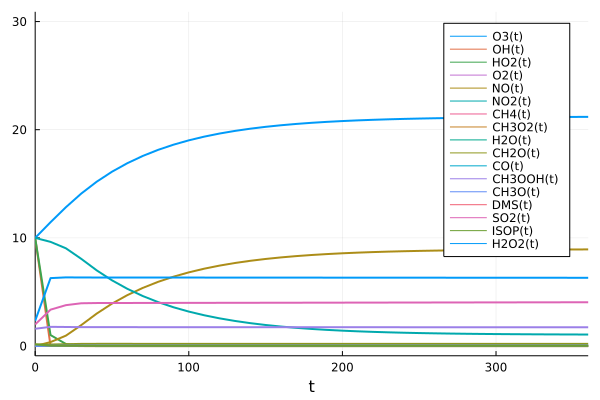

GasChem
This atmospheric chemical system model GasChem is built based on the Super Fast Chemical Mechanism, which is one of the simplest representations of atmospheric chemistry. It can efficiently simulate background tropheric ozone chemistry and perform well for those species included in the mechanism. The chemical equations used is included in the supporting table S2 of the paper, "Evaluating simplified chemical mechanisms within present-day simulations of the Community Earth System Model version 1.2 with CAM4 (CESM1.2 CAM-chem): MOZART-4 vs. Reduced Hydrocarbon vs. Super-Fast chemistry" (2018), Benjamin Brown-Steiner, Noelle E. Selin, Ronald G. Prinn, Simone Tilmes, Louisa Emmons, Jean-François Lamarque, and Philip Cameron-Smith.
Illustrative Example
Here is a simple example of generating, visualizing and solving the superfast model. We first define all parameters and variables.
begin
@parameters r1 [unit = u"ppb/s"]
@parameters r2 [unit = u"ppb/s"]
@parameters r3 [unit = u"ppb/s"]
@parameters r6 [unit = u"ppb/s"]
@parameters r7 [unit = u"ppb/s"]
@parameters r9 [unit = u"ppb/s"]
@parameters r11 [unit = u"ppb/s"]
@parameters r12 [unit = u"ppb/s"]
@parameters r13a [unit = u"ppb/s"]
@parameters r13b [unit = u"ppb/s"]
@parameters r14 [unit = u"ppb/s"]
@parameters r15 [unit = u"ppb/s"]
@parameters r17 [unit = u"ppb/s"]
@parameters r21a [unit = u"ppb/s"]
@parameters r21c [unit = u"ppb/s"]
@parameters r22 [unit = u"ppb/s"]
@parameters rr1 [unit = u"ppb/s"]
@parameters rr2 [unit = u"ppb/s"]
@parameters rr3 [unit = u"ppb/s"]
@parameters rr4 [unit = u"ppb/s"]
@parameters rr5 [unit = u"ppb/s"]
@parameters rr6 [unit = u"ppb/s"]
@parameters r4 [unit = u"ppb/s"]
@parameters r5 [unit = u"ppb/s"]
@parameters r10 [unit = u"ppb/s"]
@parameters t [unit = u"s"]
@variables O3(t) [unit = u"ppb"]
@variables OH(t) [unit = u"ppb"]
@variables HO2(t) [unit = u"ppb"]
@variables O2(t) [unit = u"ppb"]
@variables H2O(t) [unit = u"ppb"]
@variables NO(t) [unit = u"ppb"]
@variables NO2(t) [unit = u"ppb"]
@variables CH4(t) [unit = u"ppb"]
@variables CH3O2(t) [unit = u"ppb"]
@variables CH2O(t) [unit = u"ppb"]
@variables CO(t) [unit = u"ppb"]
@variables CH3OOH(t) [unit = u"ppb"]
@variables CH3O(t) [unit = u"ppb"]
@variables DMS(t) [unit = u"ppb"]
@variables SO2(t) [unit = u"ppb"]
@variables ISOP(t) [unit = u"ppb"]
@variables H2O2(t) [unit = u"ppb"]
endThen we define the chemical reaction model.
rxs = [Reaction(r1, [O3,OH], [HO2,O2], [1,1], [1,1]) #O3 + OH --> HO2 + O2
Reaction(r2, [HO2,O3], [O2,OH],[1,1],[2,1])#HO2 + O3 --> 2O2 + OH
Reaction(r3, [HO2,OH], [HO2,O2],[1,1],[1,1]) #HO2 + OH --> H2O + O2
Reaction(r6, [NO,O3], [NO2,O2],[1,1],[1,1]) #NO + O3 --> NO2 + O2
Reaction(r7, [HO2,NO], [NO2,OH],[1,1],[1,1]) #HO2 + NO --> NO2 + OH
Reaction(r9, [CH4, OH], [CH3O2, H2O],[1,1],[1,1]) #CH4 + OH --> CH3O2 + H2O
Reaction(r11, [CH2O,OH], [CO,H2O,HO2],[1,1],[1,1,1])
#CH2O + OH --> CO + H2O + HO2
Reaction(r12, [CH3O2,HO2], [CH3OOH,O2],[1,1],[1,1])
#CH3O2 + HO2 --> CH3OOH + O2
Reaction(r13a, [CH3OOH,OH], [CH3O2,H2O],[1,1],[1,1])
#CH3OOH + OH --> CH3O2 + H2O
Reaction(r13b, [CH3OOH,OH], [CH3O,H2O,OH],[1,1],[1,1,1])
#CH3OOH + OH --> CH3O + H2O + OH
Reaction(r14, [CH3O2,NO], [CH2O,HO2,NO2],[1,1],[1,1,1])
#CH3O2 + NO --> CH2O + HO2 + NO2
Reaction(r15, [CH3O2,CH3O2], [CH2O,H2O],[10,10],[20,8])
#10CH3O2 + 10CH3O2 --> 20CH2O + 8HO2
Reaction(r17, [DMS,OH], [SO2],[1,1],[1])
#DMS + OH --> SO2
Reaction(r21a, [ISOP,OH], [CH3O2],[1,1],[2])
#ISOP +OH --> 2CH3O2
Reaction(r21c, [ISOP,OH], [ISOP,OH],[2,2],[2,1])
#2ISOP + 2OH --> 2ISOP + OH
Reaction(r22, [ISOP,O3], [CH2O,CH3O2,HO2,CO], [1,1.0], [0.87,1.86,0.06,0.05])
#ISOP + O3 --> 0.87CH2O + 1.86CH3O2 + 0.06HO2 + 0.05CO
Reaction(rr2, [H2O2], [OH], [1], [2])
#H2O2 --> 2OH
Reaction(rr3, [NO2], [NO,O3], [1], [1,1])
#NO2 --> NO + O3
Reaction(rr4, [CH2O], [CO,HO2], [1], [1,2])
#CH2O --> CO + 2HO2
Reaction(rr5, [CH2O], [CO], [1], [1])
#CH2O --> CO
Reaction(rr6, [CH3OOH], [CH2O,HO2,OH], [1], [1,1,1])
#CH3OOH --> CH2O + HO2 + OH
Reaction(r4, [HO2],[H2O2,O2],[2],[1,1])
#HO2 + HO2 = H2O2 + O2
Reaction(r5,[OH,H2O2],[H2O,HO2],[1,1],[1,1])
#OH + H2O2 = H2O + HO2
Reaction(r10,[OH,CO],[HO2],[1,1],[1])
#OH + CO = HO2
] @named rs = ReactionSystem(rxs, t)which in Jupyter notebooks will give the figure that represents the reation networks.

We build a function that can predict the change of the concentration of the chemicals in the superfast mechanism with input of temperature, the initial concentrations and reaction rates of photolysis reactions.
function ozone(T_,a,b,c,d,e,f,g,h,i,j,k,l,m,n,o,p,q,r,s,t,u,z)
u₀map_ = [O3 => a, OH => b, HO2 => c, O2 => d, H2O => e, NO => f, NO2 => g, CH4 => h, CH3O2 => i, CH2O => j, CO => k, CH3OOH => l, CH3O => m, DMS => n, SO2 => o, ISOP => p, H2O2 => q]
parammap_ = [r1 => 1.7*10^(-12)*exp(-940/T_)*2.46*10^10,
r2 => 1.0*10^(-14)*exp(-490/T_)*2.46*10^10,
r3 => 4.8*10^(-11)*exp(250/T_)*2.46*10^10,
r6 => 3.0*10^(-12)*exp(-1500/T_)*2.46*10^10,
r7 => 3.5*10^(-12)*exp(250/T_)*2.46*10^10,
r9 => 2.45*10^(-12)*exp(-1775/T_)*2.46*10^10,
r11 => 5.50*10^(-12)*exp(125/T_)*2.46*10^10,
r12 => 4.10*10^(-13)*exp(750/T_)*2.46*10^10,
r13a => 2.70*10^(-12)*exp(200/T_)*2.46*10^10,
r13b => 1.10*10^(-12)*exp(200/T_)*2.46*10^10,
r14 => 2.80*10^(-12)*exp(300/T_)*2.46*10^10,
r15 => 9.50*10^(-14)*exp(390/T_)/10*2.46*10^10,
r17 => 1.10*10^(-11)*exp(-240/T_)*2.46*10^10,
r21a => 2.70*10^(-11)*exp(390/T_)*2.46*10^10,
r21c => 2.70*10^(-11)*exp(390/T_)/2*2.46*10^10,
r22 => 5.59*10^(-15)*exp(-1814/T_)*2.46*10^10,
rr2 => r,
rr3 => s,
rr4 => t,
rr5 => t,
rr6 => u,
r4 => 3.0*10^(-13)*exp(460/T_)*2.46*10^10,
r5 => 1.8*10^(-12)*2.46*10^10,
r10 => 1.5*10^(-13)*2.46*10^10
]
oprob_ = ODEProblem(rs, u₀map_, tspan, parammap_)
sol_ = solve(oprob_, Tsit5(), saveat=10.)
plot(sol_,ylim=[0,z], lw=2)
endFor example, below is the graph at 220K, when the initial concentrations are as followed: O3 => 10.0, OH => 10.0, HO2 => 10.0, O2 => 2.1(10^8), H2O => 450.0, NO => 0.0, NO2 => 10.0, CH4 => 1700, CH3O2 => 0.01, CH2O => 0.15, CO => 275, CH3OOH => 1.6, CH3O => 0.0, DMS => 50, SO2 => 2.0, ISOP => 0.15, H2O2 => 2.34, and the potolysis rates for rr2 to rr6 are 1.0097 10^-5, 0.0149, 0.00014, 0.00014 and 8.9573* 10^-6.
ozone(220,10.0, 10.0, 10.0, 2.1*(10^8), 450.0, 0.0, 10.0, 1700.0, 0.01, 0.15, 275.0, 1.6, 0.0, 50, 2.0, 0.15, 2.34, 1.0097*10^-5, 0.0149, 0.00014, 8.9573*10^-6,30)
GasChem.superfast — Functionsuperfast()This atmospheric chemical system model is built based on the Super Fast Chemical Mechanism, which is one of the simplest representations of atmospheric chemistry. It can efficiently simulate background tropheric ozone chemistry and perform well for those species included in the mechanism. The chemical equations we used is included in the supporting table S2 of the paper:
"Evaluating simplified chemical mechanisms within present-day simulations of the Community Earth System Model version 1.2 with CAM4 (CESM1.2 CAM-chem): MOZART-4 vs. Reduced Hydrocarbon vs. Super-Fast chemistry" (2018), Benjamin Brown-Steiner, Noelle E. Selin, Ronald G. Prinn, Simone Tilmes, Louisa Emmons, Jean-François Lamarque, and Philip Cameron-Smith.
The input of the function is Temperature, concentrations of all chemicals, and reaction rates of photolysis reactions
Example
using OrdinaryDiffEq, Plots
rs = superfast()
sol = solve(ODEProblem(rs, [], (0,360), [], combinatoric_ratelaws=false), Tsit5())
plot(sol)We set combinatoric_ratelaws=false because we are modeling macroscopic rather than microscopic behavior. See here and here.